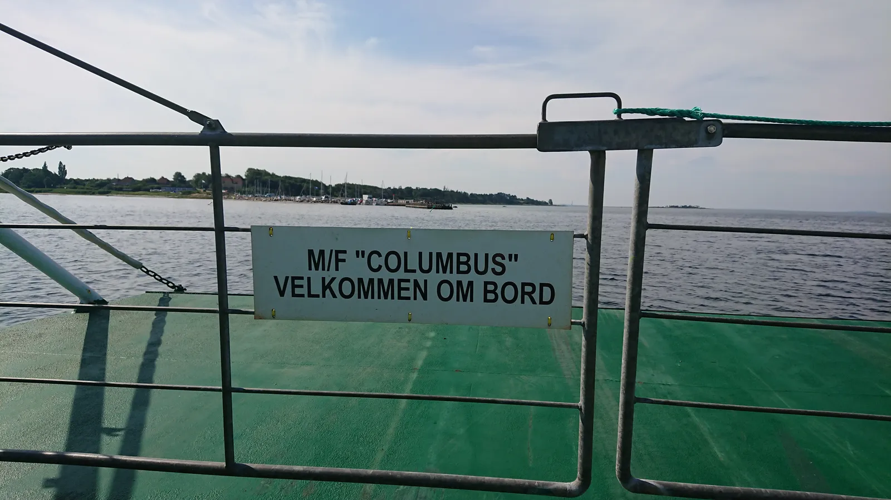

17. etape: Isefjorden rundt – Nåede de færgen?

17. etape bød på endnu en spektakulær nytænkning i en grand-tour, synkronangreb, reference til Johannes V. Jensen, svære forhandling i et storkollektiv for et par flasker solbærsaft og måske cykelhistoriens korteste spurtopgør på 35 meter.
Med godt 30 fjorde og 70 beboede øer i Danmark, var det en naturlig del af Tour de Danmark at vælge en etape, der gik rundt om Isefjorden inklusiv et øhop til Orø. Endnu en nytænkning i Tour de Danmark, ikke mindst fordi, at etapen også indeholdt overfart med 4 færger.
På forhånd var etapen frygtet af de fleste i feltet. Ikke kun fordi etapen gik over Veddinge Bakker i Odsherred, men fordi det gjaldt om, at time farten i forhold til færgetiderne – og i særdeleshed om, at undgå, at et udbrud nåede en færge før feltet. For ledelsen bag Tour de Danmark havde tidligt meldt ud, at tiden ikke stoppede ved færgeoverfarterne.

Vi har virkelig brugt meget tid på at forberede os på 17. etape. Udfordringen med, at tiden ikke blev stoppet på færgerne, kunne skabe store muligheder for et udbrud, fortæller sportsdirektør Klaus Maarup Kjærsgaard.
Og i samråd med Kaptajn Bjørnsteen, der jo har trådt sine barne- og ungdomspedaler flade på landevejene netop i Odsherred og Hornsherred, valgte vi at satse stort – og det gav bonus.
Synkront angreb i Lammefjorden
De toppede brosten på Ahlgade i Holbæk dannede rammen for starten på 17. etape. Og allerede kort efter Hagested, blev der fra Squadra Moltenis side stukket i højre og venstre. Der var total alarm- og panikstemning i feltet. 2 ryttere fra Team K-Werk valgte at udgå af samme grund.
Lige efter Audebodæmningen, hvor ruten drejede ind i den flade Lammefjord, rykkede Grave Maaløe og Kaptajn Bjørnsteen i et synkront angreb fra hver side af feltet. Lynhurtigt havde de to fået et hul på omkring ét minut. Planen var selvfølgelig indlysende; at få så stort et forspring, at de to kunne nå Rørvig – Hundested færgen før feltet.
Jeg ved godt, at det var et sats, men Kaptajn Bjørnsteen havde regnet på det: Kunne han få Grane med op over bakkerne i Veddinge, ville de mellem Høve og Rørvig kunne udbygge et forspring, hvor de lige akkurat kunne nå færgen kl. 11.55, afslører sportsdirektør Klaus Maarup Kjærsgaard.

Nåede de færgen?
Som i Johannes V. Jensens’ novelle Nåede de færgen (senere filmatiseret af T.H. Drejer, red.) var det et kapløb med tiden om at nå færgen i Rørvig. Efter nedkørslen af Høve Stræde hamrede Bjørnsteen og Maaløe gennem sommerhusområderne, hvor flere sommerferiegæster i klip-klappere måtte springe i grøften, for at redde softice og badedyr, da de to kom susende på den gode side af 55 km/t. Ved Højby, hvor der på den gamle Nykøbing Landevej ligger tre – fire små kontrabakker på stribe, begyndte det at se kritisk ud i forhold til at nå færgen kl. 11.55.
Jamen jeg ligger og trækker Kaptajnen med 48 km/t i en led sidevind – og så råber han, at jeg skal øge farten. Jeg kunne mærke, at tanken var ved at være tom – men til alt held fandt jeg to Syntosan i baglommen – og de er heldigvis hurtigvirkende, lyder det fra Gane Maaløe.
Da klokken er 11.54 ruller Grane Maaløe og Kaptajn Bjørnsteen ombord på M/F Isefjord, der præcis ét minut efter hævede rampen og glider fra kaj. Planen lykkedes. De nåede færgen!
Tumult og en hidsig Peugeot-rytter
Da feltet ankommer Rørvig Havn, er M/F Isefjord allerede langt ude i havneløbet. Med udsigt til at skulle vente 30 minutter på næste færge, udbryder der tumult og kaotisk stemning i feltet. En lille hidsig Peugeot-rytter med fuldskæg kaster sine cykelflasker mod kommissærerbilen og råber:
Merde. Les criminels. Satan et l’enfer – putain de mafia…
– mens han slår omkring sig med sin cykelpumpe.
Chokerede sejlere og solbærdrik i storkollektiv
Grane Maaløe og Kaptajn Bjørnsteen triller fra borde 12.20 i Hundested – og til stor overraskelse for det opstillede publikum på havnen, er der kun to ryttere af tour-feltet, der kører fra færgen og ud til havneområdets maritime restauranter i Hundested, hvor chokerede sejlere med opslået polokrave, over et bjerg af østers, jomfruhummere og halvfyldte champagneglas, kan se at Squadra Molteni endnu engang er ved at udradere G.S. Velopress og Team Brooklyn og resten af det danske retrocykelfelt.

Med høj fart sætter Maaløe og Bjørnsteen kursen mod syd og til M/F Columbus, der på 8 minutter fragter dem fra Sølager til Kulhuse.
Næste alvorlige udfordring blev paveen gennem Jægerspris Slotsplads, der var så ujævn, at både Maaløe og Bjørnsteen tabte deres cykelflasker. Katastrofen var indtruffet! Planen med at nå en færge i Rørvig før feltet var god. Men det var også et sats der betød, at Maaløe og Bjørnsteen måtte køre resten af etapen uden servicebil. Dén manglede de nu!


Heldigvis ramte vi 10 km senere Svanholm Gods, som siden 1978 har fungeret som selvforsynende storkollektiv. Efter en svær forhandling, et par autografer og en mundfuld kys til en gruppe fremstormende topløse kvinder med lilla stofble om håret, lykkedes det mig at få 2 flasker økologisk og biodynamisk solbærdrik, fortæller Kaptajn Bjørnsteen.
Og pludselig så det ud til, at vores mision skulle lykkedes.
Finalen på færgedækket
Efter tilbageblikket i tid og levevis på Svanholm Gods, gik det mod kabelfærgen fra Hammer Bakker til Orø. Både Maaløe og Bjørnsteen vidste nu, at sejren til Molteni var hjemme. Feltet kunne ikke nå op – og nu var der kun den korte kørsel over Orø og færgen til Holbæk tilbage af etapen.
Maaløe og Bjørnsteen aftalte, at der skulle køres mano a mano om sejren – som en sprint på færgedækket, når de skulle køre fra borde af M/F Orø i Holbæk Havn.
Og med en ringbredde vinder Grane Maaløe foran Bjørnsteen.
Jeg er så uheldig, at da jeg træder den 35 meter lange sprint an, er mit bagdæk placeret i en klat hundesavl, fra en for nyligt indkøbt familie-corona-hund. Det er selvfølgelig ærgerligt, at der som en konsekvens af ét år med Corona, er kommet hunde over alt – men det er fuld fortjent, at Grane vinder etapen, lyder det fra Kaptajn Bjørnsteen.

Forza Grane!
17. Etape:
1. Grane Maaløe, Squadra Molteni
Klassement:
1. Grane Maaløe, Squadra Molteni
2. Niels Bjørnsteen, Squadra Molteni
3. Lars Munch, Squadra Molteni
4. Jeppe Thiemer, Squadra Molteni
5. Jens StærkBojesen, Squadra Molteni
6. Carsten Jacobsen, Squadra Molteni
7. Svend Seegert, Squadra Molteni
8. Jens Langergaard, Squadra Molteni
9. Eigil Leegaard, Squadra Molteni
10. Max ”Maxteni” Nielsen, Squadra Molteni
11. Per Sandahl, Squadra Molteni
12. Løjtnant Sørensen, Squadra Molteni
Hold:
1. Squadra Molteni
2. Team Willier-Triestina
3. Team Peugeot Re-Cycled
4. Team K-Werk
DNS-Klassement:
Thomas Marker, Team Brooklyn